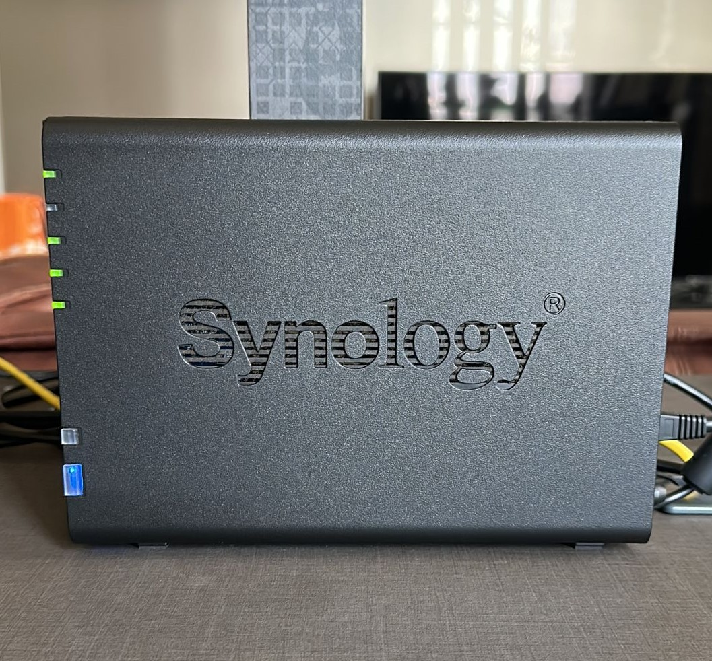

Network Attached Storage Device
Internet Protocols Encryption SecurityWhat is a NAS? 
Network Attached Storage (NAS) device is a specialized file storage server connected to a network. This allows the access of data through a network interface. I like to think of it as similar to a home ‘Google Cloud’ except that you could choose to upgrade your data capacity - or even have lots of storage without the subscription fees. Multiple users (like your family) can use the NAS system as long as they are within the same network as you.
I can access my NAS contents on my laptop, phone, or another computer device on the local network. Usage includes but is not limited to storage backups, media streaming services, and personal cloud servers.
Learnings
- Understand the basic data backup rule (3-2-1 rule) and apply it.
- Gained experience in setting up a media server (enabling access to NAS via web interface), configuring remote access, and adjusting networking router configurations.
In my British Sign Language Recognition project I configured network settings that allows the Embedded device to communicate with the host computer via Ethernet. This allows VNC access through the Putty SSH tunnel (port forwarding).
In Synology, able to select data checksum for data integrity - in my Data Networking project, I programmed the checksum functionality. Thus gaining a better understanding of the protocols behind it.
Work Done
- Configured network settings to establish an Ethernet connection for the NAS device, enabling internet router communication and connectivity with other devices.
- Configure file systems for storage - using Redundant Array of Independent Disk (RAID) configuration for data redundancy.
- Adhered to the basic backup rule (3-2-1) for both file and computer backup systems.
- Implemented secure settings, including SSL encryption certificates, user authentication, and access controls such as maintaining separate admin and basic usage accounts.
- Explored remote access configuration - OpenVPN.
- Implemented cloud synchronization for files and computer synchronization, ensuring automatic regular backups of computer snapshots to the NAS device.